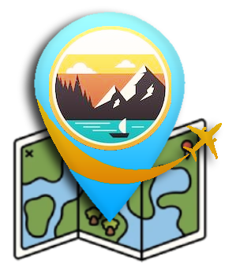
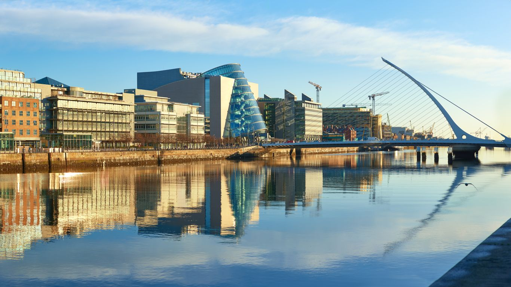
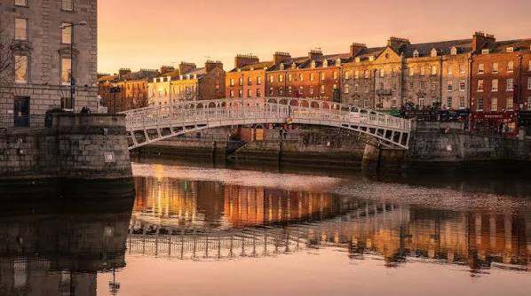
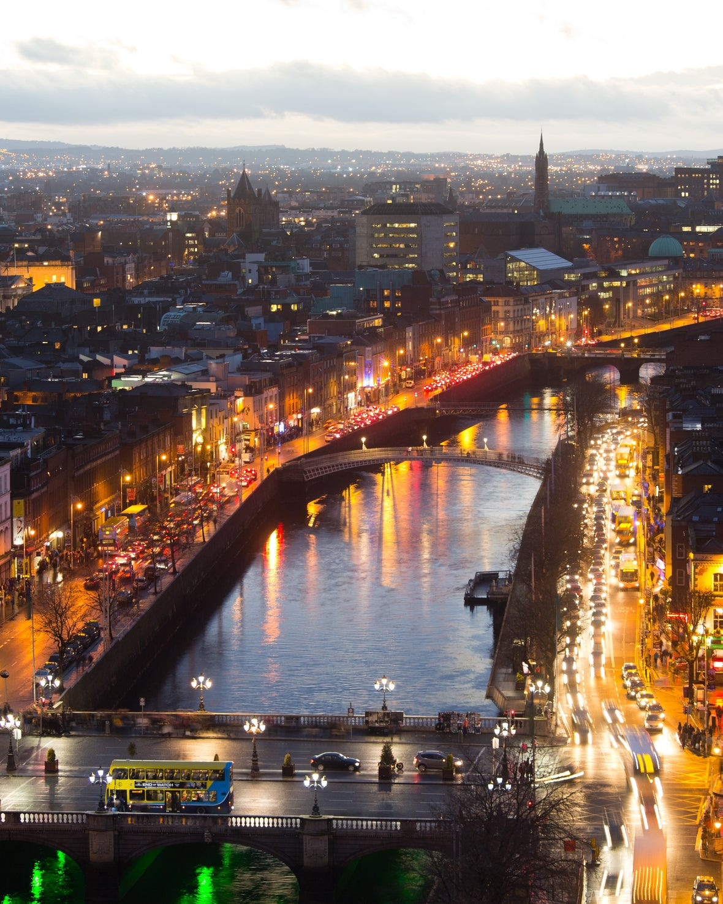
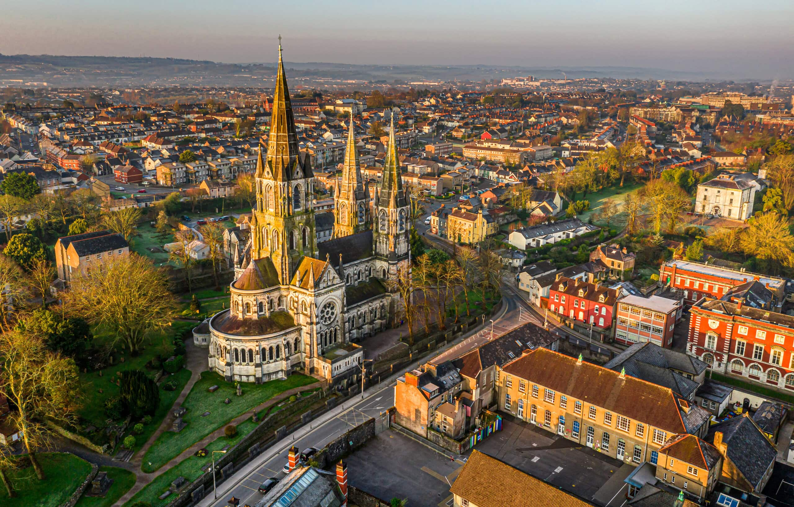
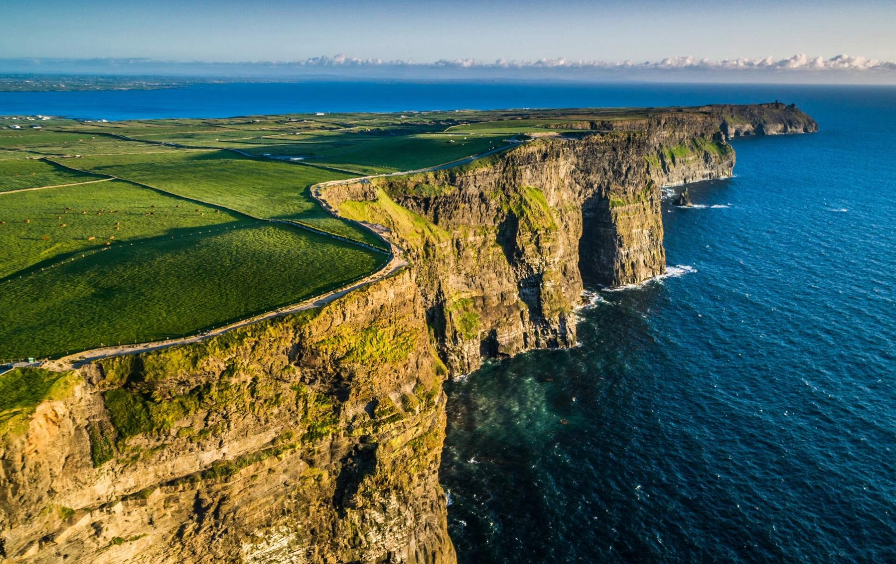

DiscoverIrelandIreland has multiple ways to get about. Make sure to check timetables before you set off!!
Great for countryside trips and destinations away from public transport routes.
Explore Ireland by bus with Bus Éireann and Dublin Coach . Check routes and timetables before travelling.
Travel peacefully between major towns and cities with Irish Rail , then connect locally.



Dublin, capital of the Republic of Ireland, is on Ireland's east coast at the mouth of the River Liffey. Its historic buildings include Dublin Castle, dating to the 13th century, and St Patrick’s Cathedral which was founded in 1191. There are many city parks such as the landscaped St Stephen’s Green and the huge Phoenix Park which contains Dublin Zoo. Dublin also features the National Museum of Ireland, which explores Irish heritage and culture.
Dublin is accessible by major motorways including the M7, M4 and M1.
Google Maps DirectionsDublin has regular bus services connecting it to towns and cities across Ireland.
Bus Éireann | Dublin Coach | Citylink | AircoachDublin is connected to major cities by rail, with services arriving at Heuston and Connolly stations.
Irish Rail Timetables
Cork, Ireland's second city, is located in the south of the country. It is known for its vibrant cultural scene, historic architecture, and beautiful surrounding countryside. The city is home to attractions such as the English Market, St. Fin Barre's Cathedral, and the Cork City Gaol. Cork also serves as a gateway to exploring the scenic landscapes of County Cork, including the famous Blarney Castle and the picturesque coastal towns.
Cork is accessible by major roads including the M8 from Dublin and the N20 from Limerick.
Google Maps DirectionsCork has regular bus services connecting it to Dublin, Limerick and other towns and cities across Ireland.
Bus Éireann | Citylink | AircoachCork is connected to Dublin and other destinations by rail. Trains arrive at Kent Station in Cork City.
Irish Rail Timetables
Located on the west coast of Ireland in County Clare, the Cliffs of Moher are one of Ireland's most famous natural attractions. Visitors can travel by car, bus or organised tour.
The Cliffs of Moher are located near Liscannor in County Clare. Visitors can reach them using the N67 and R478. Parking is available at the visitor centre.
Google Maps DirectionsBus Éireann Route 350 connects the Cliffs of Moher with Galway, Doolin and Ennis. Check the timetable before travelling.
Bus Éireann TimetablesGuided day tours are available from cities such as Dublin and Galway. These often include transport and stops at nearby attractions.
Cliffs of Moher Visitor Information